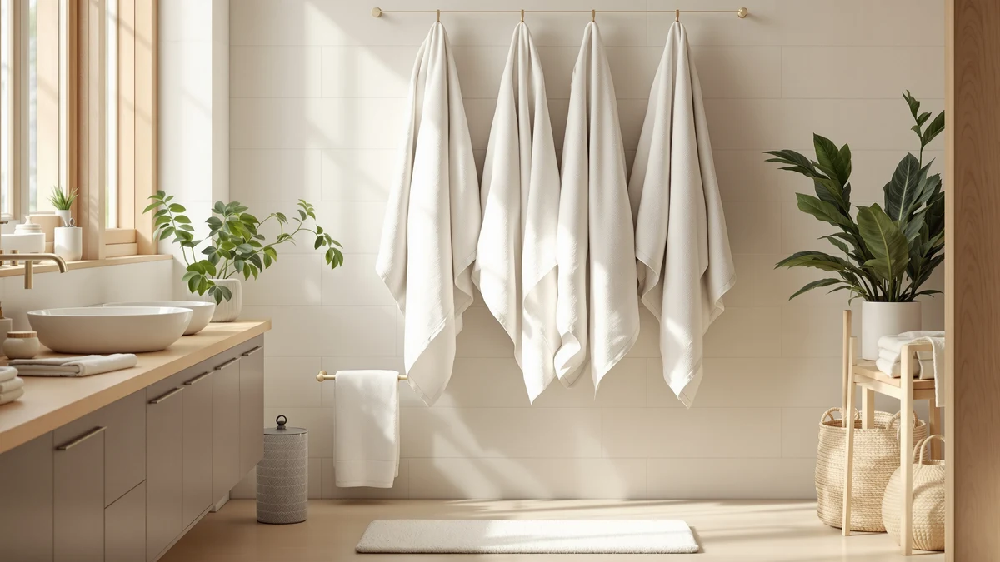

Towel Gsm Guide (2026)
Prices and picks verified as of July 2026. Independent, reader-supported reviews.


Things to Know Before You Buy
- GSM means grams per square meter. It measures how much fiber the mill packs into the fabric. A higher number gives you a thicker, more absorbent towel that also takes longer to dry.
- 500 to 700 GSM fits most home bathrooms. Towels in this band balance a soft, plush hand with a dry time that works in a normal bathroom.
- Lighter towels win for gyms, travel, and the beach. Anything from 300 to 500 GSM sheds water, packs small, and dries between uses.
- Microfiber lists GSM too, but the fiber changes the math. A 430 GSM microfiber towel dries faster and feels different from 430 GSM cotton, so compare within the same material.
- GSM alone does not equal quality. Weave, cotton staple length, and finishing decide whether a towel stays soft after 30 washes.
One spec decides how a towel feels, how fast it dries, and how well it holds up over years: grams per square meter. GSM measures the density of the fabric, and it tells you more about real performance than thread count or a brand name ever will. Once you know the weight that fits your bathroom, you can shop by number instead of guessing from a product photo.
You have probably never checked GSM, because stores rarely print it on the shelf tag. So you buy a towel that feels great in the aisle, then find out at home that it stays damp for an hour or turns stiff after three washes. A quick look at the GSM would have flagged both problems before you paid.
You also do not need a plush 800 GSM towel for every job. A gym towel and a guest bath towel want different weights. Below are the ranges that work, the trade-offs at each end, and the mistakes that quietly cost people money and comfort.
What You Need to Know
GSM counts the grams of fiber in one square meter of towel fabric. A 300 GSM towel is thin and quick to dry. An 800 GSM towel feels dense and plush and holds far more water. That one number predicts weight, absorbency, drying time, and how bulky the towel feels on a hook, which is why it matters more than any other spec on the label.
Here is the trade-off you cannot escape. More GSM gives you a softer, thirstier towel, but it also holds more water after you use it, so it dries slower and gets heavier in the wash. Less GSM dries fast and packs small, but a very thin towel can feel scratchy and struggle to dry a big body or long hair in one pass.
You should also treat GSM as material-specific. Cotton and microfiber report the same unit, yet they behave differently at the same weight. A 430 GSM microfiber towel pulls water off your skin fast because the synthetic fibers are so fine, while a 430 GSM cotton towel feels thinner and less absorbent than you would expect. When you compare two towels by GSM, keep them in the same fiber family or the number will mislead you.
Types and Categories
Towels sort into four weight bands, and each band suits a different job. Learn the ranges and you can predict how a towel behaves before you ever touch it.
300 to 400 GSM (lightweight). These towels feel thin and dry within an hour. Gym bags, travel, and beach trips reward this weight, and most Turkish flat-weave towels live here. The downside is a less cushioned feel and a shorter useful life.
400 to 600 GSM (medium). This is the everyday workhorse. A medium towel dries a full body in one pass, still dries on the bar between showers, and does not overwhelm a small bathroom. Renters and busy households do well starting here.
600 to 800 GSM (heavy). Now you get the plush, hotel-style hand that most people picture when they imagine a good towel. These soak up more water and feel great, but they need real airflow to dry and they add bulk to every wash load.
800 GSM and up (ultra-plush). Spa-grade towels sit here. They feel luxurious and last for years with care, yet they can stay damp all day in a humid, poorly ventilated bathroom. Buy this weight only if your space dries them out.
How to Choose
Start with your bathroom, not the towel. If your bathroom has a window or a strong exhaust fan, you can enjoy a heavy 700 GSM towel and it will dry out by the next shower. If your bathroom traps humidity and your towels smell musty by evening, drop down to 500 or 550 GSM and the problem often disappears. Airflow decides more about your daily experience with a towel than the price tag does.
Next, match the weight to the job. Buy a stack of 500 to 600 GSM cotton towels for daily bathroom use, since they balance comfort and dry time. Keep a couple of lightweight 300 to 400 GSM towels in the gym bag and the car for the beach, where fast drying and small pack size matter more than plushness. If you want a single luxury towel for after a long soak, that is where 700 GSM and up earns its place.
Then weigh your laundry setup. Heavy towels take longer in the dryer and cost a little more in energy over a year. A large household running several loads a week may prefer medium towels simply because they turn around faster. A couple with a good dryer can afford to go plush.
Finally, do not shop on GSM alone. A 600 GSM towel made from long-staple cotton with a tight weave will outlast and out-soften a 700 GSM towel made from short, cheap fiber. Read the fiber type and the reviews about softness after many washes, then use GSM to fine-tune between two towels that already pass.
Common Mistakes to Avoid
The most common GSM mistake is chasing the highest number you can find. Shoppers assume more grams always means a better towel, then bring home an 900 GSM slab that never fully dries in a small bathroom and grows a sour smell. Weight is a feature with a cost. Treat the top of the range as a choice for the right room rather than a default.
People also compare GSM across materials without adjusting. You cannot line up a microfiber towel against a cotton towel by GSM and call it fair, because the fibers absorb and dry at different rates. Compare cotton to cotton and microfiber to microfiber.
Another trap is ignoring size while fixating on weight. A 700 GSM hand towel and a 700 GSM bath sheet feel worlds apart in use, and a big oversized towel at a heavy GSM becomes a lot of fabric to dry and fold. Check the dimensions alongside the number.
Finally, do not trust GSM as a stand-in for durability. A dense towel from weak, short-staple cotton can go flat and rough within a year. Look at the fiber and real owner reviews before you let one number close the deal.
Care and Maintenance
Your GSM only pays off if you wash towels the right way, and higher-GSM towels demand a bit more care. Wash a new towel once with a cup of white vinegar and no detergent before you use it. Mills coat fresh towels with softeners and silicone that repel water, and that first vinegar wash strips the coating so a plush 700 GSM towel actually drinks up moisture.
Skip the fabric softener from then on. Softener leaves a waxy film on the cotton loops that flattens a heavy towel and kills the absorbency you paid for. Use about half the detergent you think you need, since dense towels trap excess soap, and add vinegar to the rinse every few washes to keep them fluffy.
Dry towels fully and promptly. A high-GSM towel holds more water, so it takes longer in the dryer and turns musty fast if you leave it balled up wet. Shake each towel out before it goes in, dry on medium heat, and pull it while still slightly warm to keep the pile soft. Give heavy towels room to breathe on the bar between uses, especially in a humid bathroom.
Our Top Picks
To show how GSM plays out in real towels, here are three picks that land in different weight bands. Each one fits a specific use, so read the verdict against your own bathroom and routine before you buy.

Editor’s Pick
POLYTE 430 GSM Microfiber Quick
A 430 GSM microfiber towel that shows what the lightweight band does best. It pulls water off fast, dries within an hour, and packs down small, which makes it a smart pick for the gym, travel, or a humid bathroom where cotton stays damp.
$35.99
Check Price on Amazon
Best Value
POLYTE 430 GSM Microfiber Oversize
The same 430 GSM microfiber in an oversize cut, so you get full-body coverage without the heavy, slow-drying feel of a plush cotton sheet. It suits anyone who wants more towel to wrap in but still needs it dry by the next shower.
$41.89
Check Price on Amazon
Premium Choice
REDKISS Large Bath Towels Set
A set of large cotton bath towels with the mid-to-heavy weight that most home bathrooms want. You get the plush hand and deep absorbency people associate with a good towel, so long as your bathroom has enough airflow to dry them out.
$39.99
Check Price on AmazonFrequently Asked Questions
What is a good GSM for a bath towel?
For everyday use, 500 to 700 GSM hits the sweet spot between a plush feel and a reasonable dry time. Below 400 GSM, towels feel thin but dry fast and pack small, which works for the gym. Above 700 GSM you get a heavy, luxurious towel that needs good airflow to dry out.
Does higher GSM always mean a better towel?
No. A higher GSM gives you a thicker, more absorbent towel, but it also dries slower and adds bulk to every wash. A 600 GSM towel from long-staple cotton can feel softer and last longer than an 800 GSM towel made from cheap short fiber. Use GSM to fine-tune, not to decide on its own.
Can you compare cotton and microfiber by GSM?
Not directly. The two materials report the same unit but behave differently, so a 430 GSM microfiber towel dries faster and pulls water off your skin quicker than a 430 GSM cotton towel. Compare cotton to cotton and microfiber to microfiber, then decide between materials on feel and dry time.
What GSM is best for a quick-dry gym or travel towel?
Stay in the 300 to 500 GSM range. Lightweight towels shed water, dry between uses, and fold down small in a bag. Turkish flat-weave cotton and fine microfiber both live in this band, so you get fast drying without a scratchy feel.
Why does my heavy towel stay damp and smell?
A high-GSM towel holds more water, so it needs real airflow to dry. In a humid bathroom with no window or fan, that moisture lingers and turns musty. Drop to 500 or 550 GSM, give the towel room on the bar, and dry it fully in the machine to fix the smell.
Verdict
The takeaway is simple: match the weight to the room and the job, then let fiber quality break the tie. For most home bathrooms, a cotton towel in the 500 to 700 GSM range gives you the plush feel you want with a dry time you can live with. For the gym, travel, and the beach, drop to the 300 to 500 GSM band where towels shed water and pack small. Reserve the 800 GSM and up towels for a well-ventilated bathroom that can dry them out. If your space traps humidity, the fast-drying POLYTE microfiber towels solve the damp, musty problem that heavy cotton creates. Whatever weight you pick, wash it once with vinegar, skip the fabric softener, and dry it fully, and your towels will stay soft and absorbent for years.